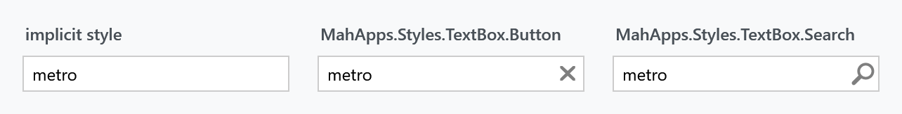
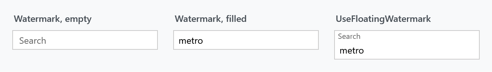
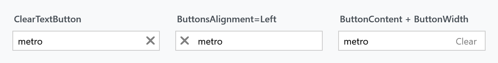
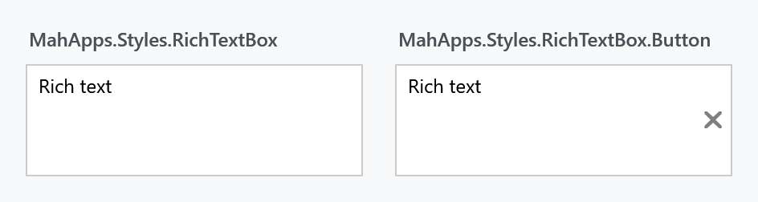

Every TextBox in a MahApps application is styled without any markup on your side. On top of that the library adds a watermark, a clear button, a command button and a search variant — all through attached properties, so nothing has to be subclassed.

The implicit style
Styles/Controls.xaml contains a keyless style for TextBox based on MahApps.Styles.TextBox, and another for RichTextBox. Merging that dictionary — which the quick start does — is all it takes:
<ResourceDictionary Source="pack://application:,,,/MahApps.Metro;component/Styles/Controls.xaml" />
From then on a plain <TextBox /> is the MahApps one, with a 26 pixel minimum height, 4 pixels of padding, the theme's border brushes and the MahApps context menu.
To extend it rather than replace it, base your own style on the keyed one:
<Style BasedOn="{StaticResource MahApps.Styles.TextBox}" TargetType="{x:Type TextBox}">
<Setter Property="mah:TextBoxHelper.ClearTextButton" Value="True" />
</Style>
Leaving out the BasedOn throws the template away with it, and with the template go the watermark, the buttons and the validation adorner.
The explicit styles
Two styles are meant to be set on a TextBox, the second inheriting from the first.
| Style | |
|---|---|
MahApps.Styles.TextBox |
the base. What the implicit style applies |
MahApps.Styles.TextBox.Search |
the same with a magnifier as the button's icon and the library's search command behind it |
In a released version there is a third, MahApps.Styles.TextBox.Button. It added a button bound to TextBoxHelper.ButtonCommand, and it is what 2.4.11 has. It is gone on develop: the base style carries the button now, so a command of your own needs no style but the base one. Asking for the old name after that ships leaves the box without a template at all.
<TextBox Style="{StaticResource MahApps.Styles.TextBox.Search}"
mah:TextBoxHelper.ButtonCommand="{Binding SearchCommand}"
mah:TextBoxHelper.Watermark="Search" />
What shows the button
There is one button in the template, and two things bring it out. It is collapsed only while both are absent, which is the thing to know before wondering why a ButtonCommand never fires.
| Set | Button appears | What clicking it does |
|---|---|---|
TextBoxHelper.ClearTextButton="True" |
yes | clears the box |
TextBoxHelper.ButtonCommand |
yes | runs that command |
| neither | no |
With the clear button switched on, a trigger points the button at MahAppsCommands.ClearControlCommand, and a trigger beats the template binding to ButtonCommand, so a box that asks for both clears rather than running the command.
Clearing goes through that command, which is bound for the control classes rather than handled in the style, and it refuses to run unless ClearTextButton says so. For a TextBox it empties the text and pushes the empty value back through the Text binding, so a bound view model sees the change; for a RichTextBox it clears the blocks of the document.
The Windows 10 and WinUI styles
MahApps.Styles.TextBox.Win10 and MahApps.Styles.TextBox.WinUI are on develop and ship with the next release. Neither is in 2.4.11.
Two further styles draw the box the way Windows draws one rather than the way Metro does. They share a template and differ in what they paint.
MahApps.Styles.TextBox.Win10 is a fill darker than the page, a frame two pixels thick all the way round, and the box turning white with the accent around it once the caret is in. MahApps.Styles.TextBox.WinUI is nearly the opposite: a light translucent fill, a border you have to look for that is a touch stronger along its bottom edge, and with the caret a solid fill, a line of accent underneath and rounded corners.
On both of them the delete button comes and goes with the caret, the way the UWP box does, while a button carrying a ButtonCommand of your own stays where it is. It wears MahApps.Styles.Button.TextControl.Delete, and the chrome behind it is MahApps.Templates.Button.TextControl.Win10 or MahApps.Templates.Button.TextControl.WinUI, which the password box of the same look hands to its own two buttons.
What each one is made of sits in the theme, MahApps.Brushes.TextControl.* for the Win10 style and MahApps.Brushes.TextControl.WinUI.* for the other, the WinUI set taken from the WinUI values themselves. Both point ControlsHelper.DisabledBorderBrush at what their own set has for a control with nothing left to say.
The border thicknesses and the padding are resources too, so a style of your own can answer them differently without replacing the template:
| Resource | |
|---|---|
TextControlBorderThemeThickness |
the border with no caret in the box |
TextControlBorderThemeThicknessFocused |
the border with the caret in it |
TextControlThemePadding |
the room around the text |
TextControlPlaceholderMargin |
where the watermark sits |
Along an edge that only changes colour, keep both thicknesses the same. A border counts towards the height of the control, so one that grows when the box takes the caret moves everything standing under it — visible at 100% scaling, hidden at 125% by the rounding of the layout. That is why the WinUI style draws its bottom edge two pixels thick either way.
Each of the two is also a whole style set, applied to every control at once rather than box by box: see Win 10 (UWP) and WinUI.
Watermark

<TextBox mah:TextBoxHelper.Watermark="Search" />
<TextBox mah:TextBoxHelper.Watermark="Search"
mah:TextBoxHelper.UseFloatingWatermark="True" />
A plain watermark disappears as soon as the first character is typed. A floating one moves above the content instead and stays there, which keeps the label visible while the box is being filled in.
WatermarkAlignment and WatermarkTrimming control how it sits and how it is cut off. WatermarkWrapping follows the box's own TextWrapping unless you set it — the base style binds the two together, so a wrapping text box gets a wrapping watermark for free.
AutoWatermark takes the text from the bound property instead:
[Display(Prompt = "Search")]
public string Query { get; set; }
<TextBox Text="{Binding Query}" mah:TextBoxHelper.AutoWatermark="True" />
Buttons

<TextBox mah:TextBoxHelper.ClearTextButton="True" />
<TextBox mah:TextBoxHelper.ClearTextButton="True"
mah:TextBoxHelper.ButtonsAlignment="Left" />
ButtonsAlignment takes Left, Right or Opposite. ButtonContent, ButtonContentTemplate, ButtonTemplate, ButtonWidth, ButtonFontFamily and ButtonFontSize decide what the button looks like; the base style sets the width to 22 and the font size to MahApps.Font.Size.Button.ClearText.
Helper properties
Everything above comes from TextBoxHelper, and the border and corner from ControlsHelper. The full tables are on the helper pages — TextBoxHelper and ControlsHelper — but three of them are worth repeating because the style depends on them:
| Property | Set by the style to | |
|---|---|---|
TextBoxHelper.IsMonitoring |
True |
keeps HasText and TextLength current, and drives the watermark |
TextBoxHelper.IsSpellCheckContextMenuEnabled |
bound to SpellCheck.IsEnabled |
turning spell check on gets you the spell-check context menu as well |
ControlsHelper.FocusBorderBrush |
MahApps.Brushes.TextBox.Border.Focus |
the border while the box has focus |
That second one is a nicety worth knowing about: this is enough to get both.
<TextBox SpellCheck.IsEnabled="True" />
RichTextBox
RichTextBox gets the same treatment, one implicit style matching the TextBox look, MahApps.Styles.RichTextBox.

In a released version this one is the odd one out. 2.4.11 has a second style, MahApps.Styles.RichTextBox.Button, whose button is always visible, no flag hiding it, and which never clears anything: it binds straight to ButtonCommand. On develop that style is gone and the base one behaves the way the text box does, the clear button included, since the clearing is MahAppsCommands.ClearControlCommand for both. ButtonCommandParameter still defaults to the control itself, so a command of your own receives it without anything being passed.
Validation and busy state
Validation.ErrorTemplate is set to MahApps.Templates.ValidationError, so a failing validation rule is drawn the way it is on every other MahApps input control. How that popup behaves — whether it shows on hover, whether a click dismisses it — is ValidationHelper.
TextBoxHelper.IsWaitingForData is in the released version only. It ran a pulsing glow around the box for a value being fetched or checked, and 2.4.11 still has it:
<TextBox mah:TextBoxHelper.IsWaitingForData="{Binding IsLoading}" />
It was removed on develop along with the rest of that generation of the text box styles. For the same job now, put a ProgressRing or an indeterminate ProgressBar next to the box.